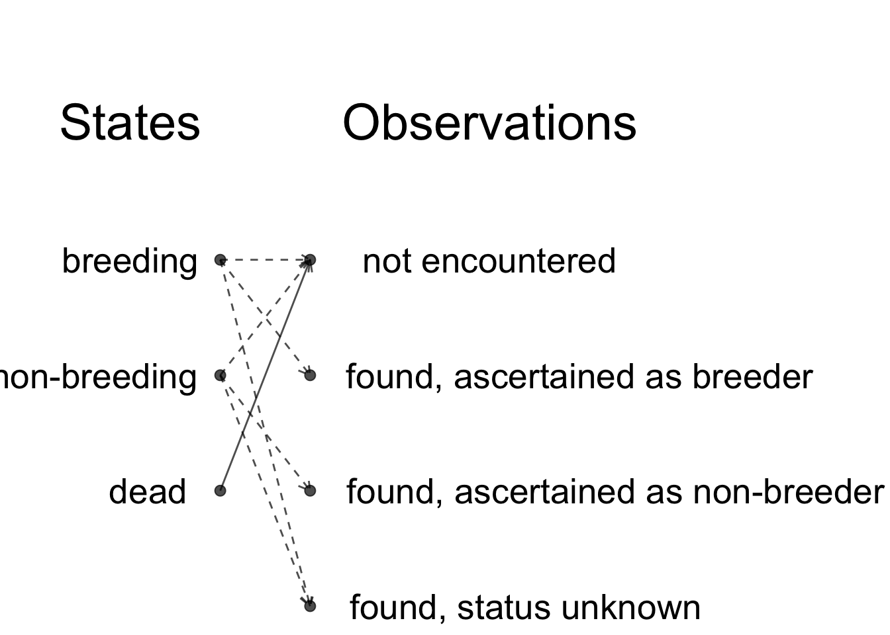

So far, you have used nimbleMCMC() which runs the default MCMC workflow. This is perfecly fine for most applications. However, in some situations you need to customize the MCMC samplers to improve or fasten convergence. NIMBLE allows you to look under the hood by using a detailed workflow in several steps: nimbleModel(), configureMCMC(), buildMCMC(), compileNimble() and runMCMC(). Note that nimbleMCMC() does all of this at once.
We write the model code, read in data and pick initial values as before:
model <- nimbleCode({
# likelihood
survived ~ dbinom(theta, released)
# prior
theta ~ dunif(0, 1)
# derived quantity
lifespan <- -1/log(theta)
})
my.data <- list(survived = 19, released = 57)
initial.values <- list(theta = 0.5)First step is to create the model as an R object (uncompiled model) with nimbleModel():
survival <- nimbleModel(code = model,
data = my.data,
inits = initial.values)You can look at its nodes:
survival$getNodeNames()
## [1] "theta" "lifespan" "survived"You can look at the values stored at each node:
survival$theta
## [1] 0.5
survival$survived
## [1] 19
survival$lifespan
## [1] 1.443
# this is -1/log(0.5)We can also calculate the log-likelihood at the initial value for theta:
survival$calculate()
## [1] -5.422
# this is dbinom(x = 19, size = 57, prob = 0.5, log = TRUE)The ability in NIMBLE to access the nodes of your model and to evaluate the model likelihood can help you in identifying bugs in your code. Give example? Provide negative initial value for theta, or released in data < survived.
You can obtain the graph of the model as in Figure 1.2 with:
survival$plotGraph()
Second we compile the model with compileNimble():
Csurvival <- compileNimble(survival)With compileNimble(), the C++ code is generated, compiled and loaded back into R so that it can be used in R (compiled model):
Csurvival$theta
## [1] 0.5Now you have two versions of the model, survival is in R and Csurvival in C++. Being able to separate the steps of model building and parameter estimation is a strength of NIMBLE. This gives you a lot of flexibility at both steps. For example, imagine you would like to fit your model with maximum likelihood, then you can do it by wrapping your model in an R function that gets the likelihood and maximise this function. Using the C version of the model, you can write:
# function for negative log-likelihood to minimize
f <- function(par) {
Csurvival[['theta']] <- par # assign par to theta
ll <- Csurvival$calculate() # update log-likelihood with par value
return(-ll) # return negative log-likelihood
}
# evaluate function at 0.5 and 0.9
f(0.5)
## [1] 5.422
f(0.9)
## [1] 55.41
# minimize function
out <- optimize(f, interval = c(0,1))
round(out$minimum, 2)
## [1] 0.33By maximising the likelihood (or minimising the negative log-likelihood), you obtain the maximum likelihood estimate of animal survival, which is exactly 19 surviving animals over 57 released animals or 0.33.
Third we create a MCMC configuration for our model with configureMCMC():
survivalConf <- configureMCMC(survival)
## ===== Monitors =====
## thin = 1: theta
## ===== Samplers =====
## RW sampler (1)
## - thetaThis steps tells you the nodes that are monitored by default, and the MCMC samplers than have been assigned to them. Here theta is monitored, and samples from its posterior distribution are simulated with a random walk sampler similar to the Metropolis sampler we coded in the previous chapter in Section ??.
To monitor lifespan in addition to theta, you write:
survivalConf$addMonitors(c("lifespan"))
## thin = 1: lifespan, theta
survivalConf
## ===== Monitors =====
## thin = 1: lifespan, theta
## ===== Samplers =====
## RW sampler (1)
## - thetaThird, we create a MCMC function with buildMCMC() and compile it with compileNimble():
survivalMCMC <- buildMCMC(survivalConf)
CsurvivalMCMC <- compileNimble(survivalMCMC, project = survival)Note that models and nimbleFunctions need to be compiled before they can be used to specify a project.
Fourth, we run NIMBLE with runMCMC():
n.iter <- 5000
n.burnin <- 1000
samples <- runMCMC(mcmc = CsurvivalMCMC,
niter = n.iter,
nburnin = n.burnin)
## |-------------|-------------|-------------|-------------|
## |-------------------------------------------------------|We run a single chain but runMCMC() allows you to use multiple chains as with nimbleMCMC().
You can look into samples which contains values simulated from the posterior distribution of the parameters we monitor:
head(samples)
## lifespan theta
## [1,] 0.6391 0.2092
## [2,] 0.6391 0.2092
## [3,] 0.6770 0.2283
## [4,] 0.6770 0.2283
## [5,] 0.6770 0.2283
## [6,] 0.6770 0.2283From here, you can obtain numerical summaries with samplesSummary():
samplesSummary(samples)
## Mean Median St.Dev. 95%CI_low 95%CI_upp
## lifespan 0.9344 0.9202 0.15606 0.6649 1.2883
## theta 0.3384 0.3373 0.06006 0.2222 0.4601I have summarized the steps above in the box below.
Detailed NIMBLE workflow:
# model building
model <- nimbleCode({
# likelihood
survived ~ dbinom(theta, released)
# prior
theta ~ dunif(0, 1)
# derived quantity
lifespan <- -1/log(theta)
})
# read in data
my.data <- list(released = 57, survived = 19)
# pick initial values
initial.values <- function() list(theta = runif(1,0,1))
# create model as an R object (uncompiled model)
survival <- nimbleModel(code = model,
data = my.data,
inits = initial.values())
# compile model
Csurvival <- compileNimble(survival)
# create a MCMC configuration
survivalConf <- configureMCMC(survival)
# add lifespan to list of parameters to monitor
survivalConf$addMonitors(c("lifespan"))
# create a MCMC function and compile it
survivalMCMC <- buildMCMC(survivalConf)
CsurvivalMCMC <- compileNimble(survivalMCMC, project = survival)
# specify MCMC details
n.iter <- 5000
n.burnin <- 1000
n.chains <- 2
# run NIMBLE
samples <- runMCMC(mcmc = CsurvivalMCMC,
niter = n.iter,
nburnin = n.burnin,
nchain = n.chains)
# calculate numerical summaries
MCMCsummary(object = samples, round = 2)
# visualize parameter posterior distribution
MCMCplot(object = samples,
params = 'theta')
# check convergence
MCMCtrace(object = samples,
pdf = FALSE, # no export to PDF
ind = TRUE, # separate density lines per chain
params = "theta")At first glance, using several steps instead of doing all these at once with nimbleMCMC() seems odds. Why is it useful? Mastering the whole sequence of steps allows you to play around with samplers, by changing the samplers NIMBLE picks by default, or even writing your own samplers.